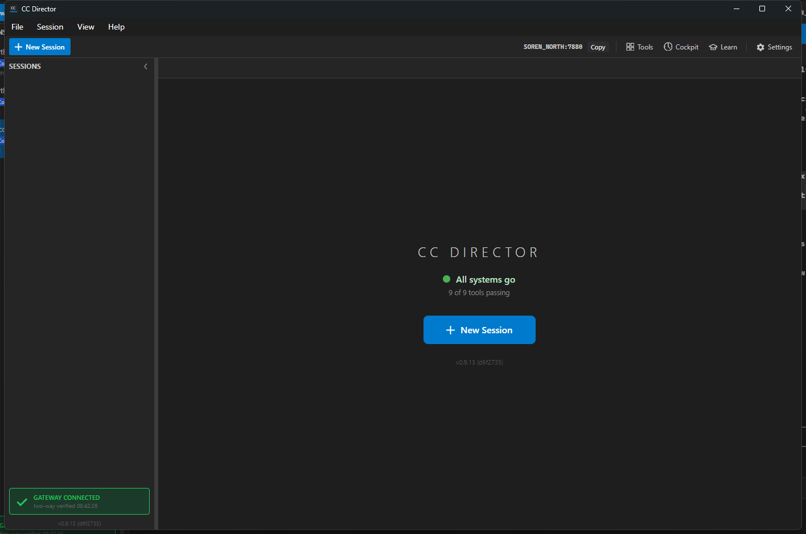

Title: PortAllocator burns a port slot per ungraceful shutdown; stale .port files exhaust 7879..7898 and disable the Control API
Branch: issue-685-portallocator-stale-reservations
File changed: src/CcDirector.ControlApi/PortAllocator.cs +
src/CcDirector.Gateway.Tests/PortAllocatorTests.cs (new)
A .port reservation file is only deleted on a graceful Release. Every
hard-kill, crash, or reboot left one behind. ReadPortsInUseByOtherDirectors trusted
every file on disk, so ghost reservations accumulated until the whole 7879..7898 range
looked busy even when every TCP port was actually free - and a starting Director threw
"All ports in range 7879..7898 are busy", bringing up no Control API (Remote, Gateway, and phone
access all off).
The fix, in PortAllocator.cs:
CollectLivePortReservations(directory, except, isPortFree) that takes the
port-liveness predicate by injection (so tests do not touch real OS ports or the real user's
reservation directory). ReadPortsInUseByOtherDirectors is now a thin wrapper that
passes the real IsPortFree.| Criterion | Result | Evidence |
|---|---|---|
With ~19 stale .port files (dead GUIDs) and all OS ports free, a starting
Director allocates a port and brings up the Control API. |
PASS | 19 ghost .port files were pre-seeded (one per bindable port in the range). The
test Director allocated port 7880 and Kestrel bound it. See log and the live
GET /healthz -> HTTP 200 below, and the screenshot showing
SOREN_NORTH:7880 / "All systems go". |
A .port file whose claimed port is actually free to bind is not counted as
"used by others". |
PASS | 18 of the 19 ghosts (all on free ports) were pruned and not counted; allocation succeeded.
Unit test CollectLivePortReservations_StaleReservationOnFreePort_NotCountedAndFilePruned. |
Stale .port files are pruned so the range cannot be exhausted by ghosts over
time. |
PASS | The Director log shows 18 Pruning stale reservation ...: claimed port N is free to
bind lines, and the files are gone from disk afterward. The one remaining ghost
(7879) was correctly KEPT because port 7879 was bound at scan time (a real
Director was holding it) - proving the live-reservation half of the fix and that a live
Director's file is never disturbed. |
| Regression test: stale reservation -> allocation succeeds; live reservation (port not bindable) -> still respected. | PASS | 6 new xUnit tests in PortAllocatorTests.cs, all passing
(Passed: 6, Failed: 0). |
Pre-fix this Director would have thrown "All ports ... are busy" and started with no Control API. With the fix it pruned the ghosts and allocated cleanly:
2026-06-24 08:42:25.925 [PortAllocator] Allocate: directorId=ebf39d12-... 2026-06-24 08:42:25.929 [PortAllocator] Pruning stale reservation issue685-ghost-...: claimed port 7896 is free to bind 2026-06-24 08:42:25.930 [PortAllocator] Pruning stale reservation issue685-ghost-...: claimed port 7898 is free to bind ... (18 ghost reservations pruned in total) ... 2026-06-24 08:42:25.944 [PortAllocator] Pruning stale reservation issue685-ghost-...: claimed port 7894 is free to bind 2026-06-24 08:42:25.946 [PortAllocator] Allocated port 7880 2026-06-24 08:42:25.987 [ControlApiHost] Kestrel listening on http://127.0.0.1:7880 (loopback only; remote access via Tailscale Serve)
Full excerpt: director-log-portallocator.txt.
GET http://127.0.0.1:7880/healthz -> HTTP 200
{"status":"ok","directors":1,"sessions":0,"version":"0.9.13",
"directorId":"ebf39d12-f16d-4239-ac5a-a579abaad20c","machineName":"SOREN_NORTH"}
Full response: healthz-response.txt.
Top-right shows the Control API address SOREN_NORTH:7880 the Director allocated despite
the ghost-flooded reservation range; status reads "All systems go" and "Gateway connected".

dotnet build cc-director.sln -> Build succeeded. 0 Warning(s) 0 Error(s) dotnet test (PortAllocatorTests) -> Passed! Failed: 0, Passed: 6, Skipped: 0
No drift. This is a bug fix to existing port-allocation logic in the Control API container; it does not change architecture or security posture.
I believe this is finished. The build is clean (0 warnings/0 errors), 6 regression tests pass, and a live test Director proved the field failure self-heals: a range flooded with 19 ghost reservations no longer blocks allocation - the ghosts on free ports are pruned, the one reservation whose port was genuinely bound is respected and the real Director's file is left untouched, and the Control API comes up and answers HTTP 200.